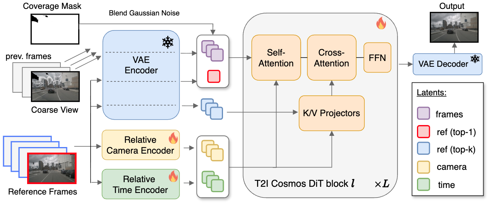

Efficient Generative 4D Novel View Synthesis for Driving Scenes from Monocular Videos
02 / Method
Method overview

03 / Qualitative Results
Novel view synthesis
Explore synchronized driving videos at 1-meter and 2-meter camera displacements. Choose a dataset, then switch between L, R, and U camera paths.